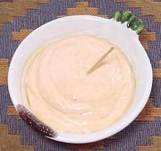

|
Rocoto Sauce / DipPeru - Salsa de Rocoto | ||||
| Makes: Effort: Sched: DoAhead: |
1 cup * 10 min Yes |
Peruvians use this Sauce or Dip with just about anything and everything, and once you've tried it, so will you. | |||
|
2 1 7 1/2 1 4 1/3 1/4 |
T cl oz c T in t t |
Rocoto Paste (1) Garlic Queso Fresco (2) Olive Oil (3) Wine Vinegar Saltines (4) Salt Pepper |
Make - (10 min)
|